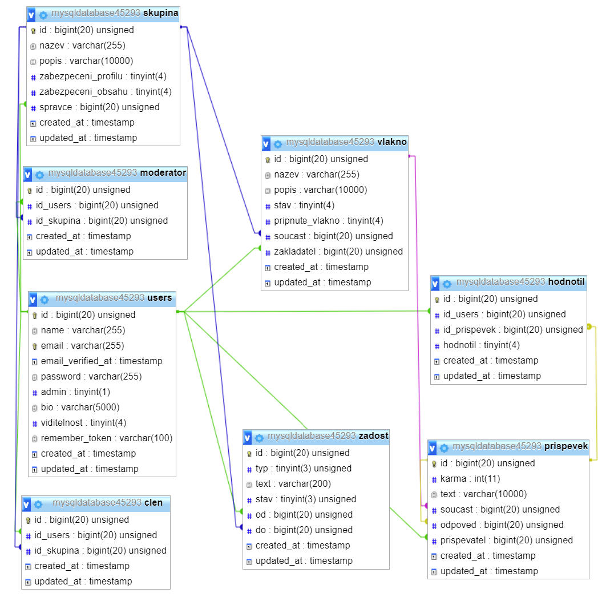

Sociální síť: diskuse v diskusních skupinách
- Autoři
- Klein Kristián
xklein19@stud.fit.vutbr.cz -
Team management, zakladný setup projektu(inštalácia balíčkov a závislostí), generovanie autentifikácie, tvorba funkcionality a views pre skupiny, inštalácia projektu na hosting server.
- Pavlovič Andrej
xpavlo14@stud.fit.vutbr.cz -
Dátový návrh a tvorba ER diagramu a SQL skriptu pre generovanie migrácií, tvorba modelov ,seedrov a factories, funkcionalita a views pre vlákna a ich príspevky.
- Nevídal Jakub
xnevid02@stud.fit.vutbr.cz -
Dátový návrh a tvorba ER diagramu, celková správa užívateľov, tvorba middleware (zabezpečení url), tvorba funkcionality a views pre profily užívateľov a tvorba funkcionality a views pre vybavovanie žiadostí.
- URL aplikace
- https://iis-forum.azurewebsites.net
Uživatelé systému pro testování
Týchto užívateľov sme naseedovali manuálne. Slúžia ako testovacie dáta našej aplikácie a základných rol definovaných v zadaní. (prípady užitia).
| Login | Heslo | Role |
|---|
| admin@example.com | heslo789 | Administrátor |
| owner@example.com | heslo456 | Správce |
| mod@example.com | heslo123 | Moderátor |
| member@example.com | heslo000 | Člen |
| user@example.com | password | Registrovaný užívateľ |
Diagram prípadu užití neuvádzame, z hľadiska implementácie daných prípadu užitia uvedených v zadaní.
Implementace
Stručná dokumentace k implementaci, která popisuje, které části projektu (např. PHP skripty) implementují jednotlivé případy použití.
Databáze

Instalace
- Pre hosting server sme si vybrali tool Web App + MySQL od Microsoft Azure, z hľadiska, že máme na Azure študentský účet a taktiež, že je pre nás dostupný vstupný príspevok na softvér od Microsoftu.
Inštalácia na server spočívala v tom, že sme si najprv nakonfigurovali základné nastavenia serveru a taktiež MySQL databázového serveru (v prípade serveru jeho názov a jeho lokáciu a v prípade databázového serveru názov, admin login name a heslo) Z výkonnostného hľadiska DB sme nastavovali pamäť a výkon.
- Hosting server požaduje PHP verziu 7.4 a vyššie. Databázový server zas MySQL verziu 5.7
- Ďalej sme pri inštalácii dopĺňali extension Composer pre správne fungovanie Laravel projektu. Hosting server sme prepojili s naším repozitárom na GitHube a teda sa každá zmena v branchi main ihneď premietne na server. Najdôležitejšou úlohou bolo upravovanie súboru .env, kde sme definovali potrebné závislosti medzi našou aplikáciou a hosting serverom(DB_HOST, Database name, User name/password a pod.).
Tabuľky na databázovom servery sme vytvorili pomocou migrácií v našej aplikácii a príkazu php artisan migrate
Známé problémy
Zde popište, které body zadání nejsou implementovány a z jakého důvodu. Např. „Z časových důvodů nebyla implementována správa uživatelů.” Pomůžete tím zrychlit hodnocení, když neimplementované funkce nebudeme muset dlouze hledat.